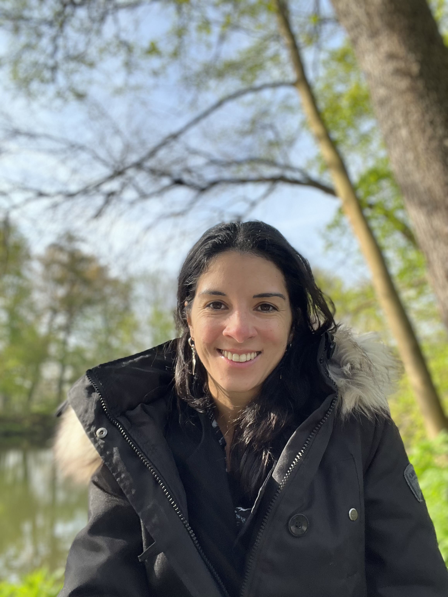
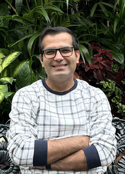
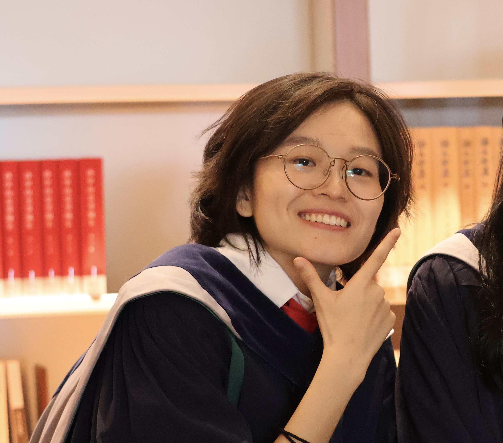
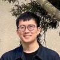
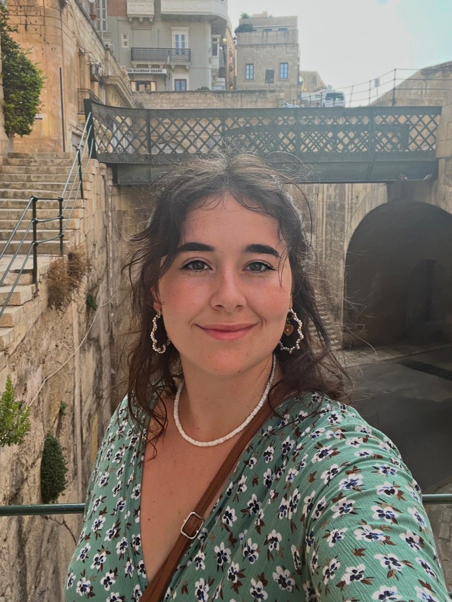

Vanessa Rossetto Marcelino
Lab leader, Ramón y Cajal Fellow
I am a microbiome ecologist working at the interface between bioinformatics, biomedicine and food science. I am particularly interested in understanding why organisms are where they are, how they got there, and — in the context of human gut microbiomes — what that means for our health and wellbeing. Before joining IATA-CSIC in Valencia, I led a research group at the University of Melbourne, where part of the lab is still based.
Lab Members

Dr Kshitij Tandon Postdoctoral Research Fellow
Ziwei Wu PhD Student
Yuhao (Andy) Tong PhD Student
Lluna Bellot Bioinformatics Research AssistantPast Students and Visitors
- V Salazar — PhD student, University of Melbourne (2024–2025)
- M Spralja — MSc student, University of Melbourne (2024–2025)
- AM Garcia — MSc student, University of Valencia (2024–2025)
- M Hallgren — PhD student visitor, Technical University of Denmark (2024)
- R Young — PhD student, Monash University (2020–2024)
- R Sundararajan — Research Assistant, Hudson Institute (2021)
- K Kim — Research Assistant, Westmead Institute, Sydney (2019)
- P Clausen — PhD student visitor, Technical University of Denmark (2019)
- C Cremen — PhD student, University of Melbourne (2017–2018)
Contact
We are part of the Spanish Research Council (CSIC), and are based at the Institute of Agrochemistry and Food Technology (IATA) in the beautiful and suunny Valencia (also known as the City of Arts and Sciences).
vrmarcelino [at] iata.csic.es
Carrer del Catedràtic Agustín Escardino Benlloch, 7
46980 Paterna, Valencia, Spain
Interested in joining the lab?
If you have recently graduated and are interested in joining the team as a postdoctoral fellow in Valencia, check out the Ayudas Juan de la Cierva and the EMBO Postdoctoral Fellowships. Minority groups are highly encouraged!
Opportunities are open for individuals driven by bioinformatics, computational biology, experimental research, or a hybrid of these approaches. Specific projects can focus on either fundamental questions (microbiome and host evolution) or applied outcomes (microbiome-based therapies).
To apply or discuss project ideas, please reach out with a cover letter, CV, and transcripts.